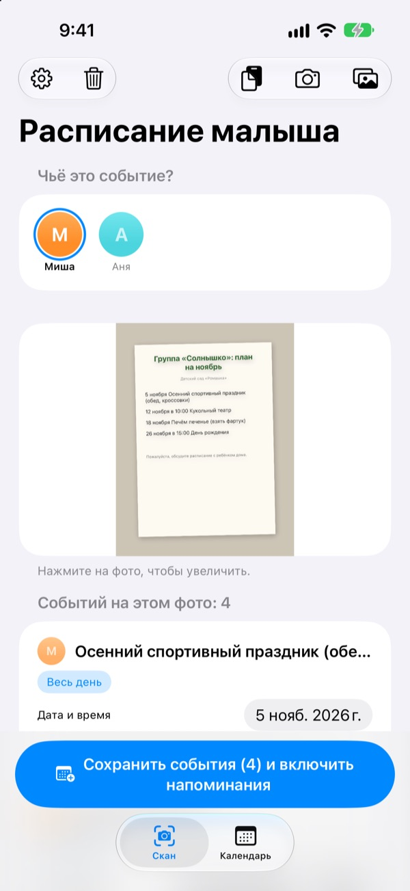
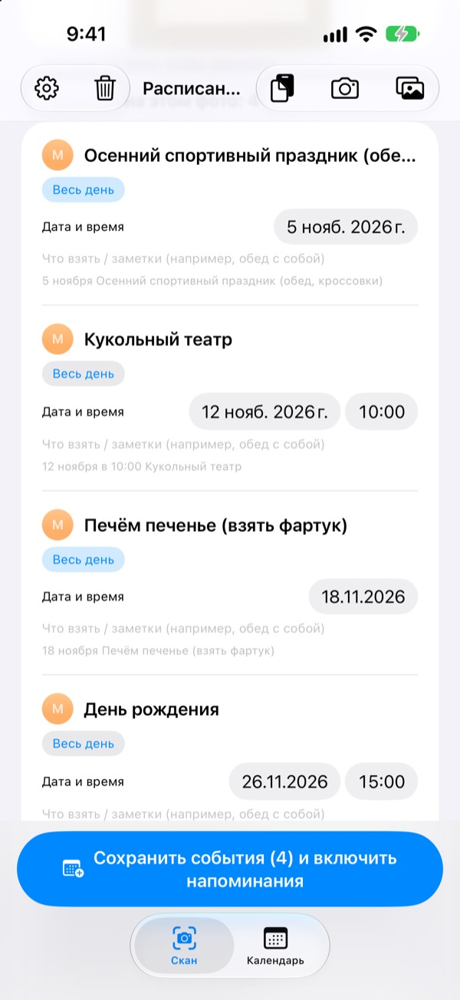
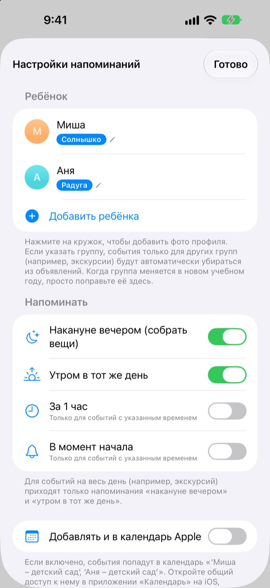
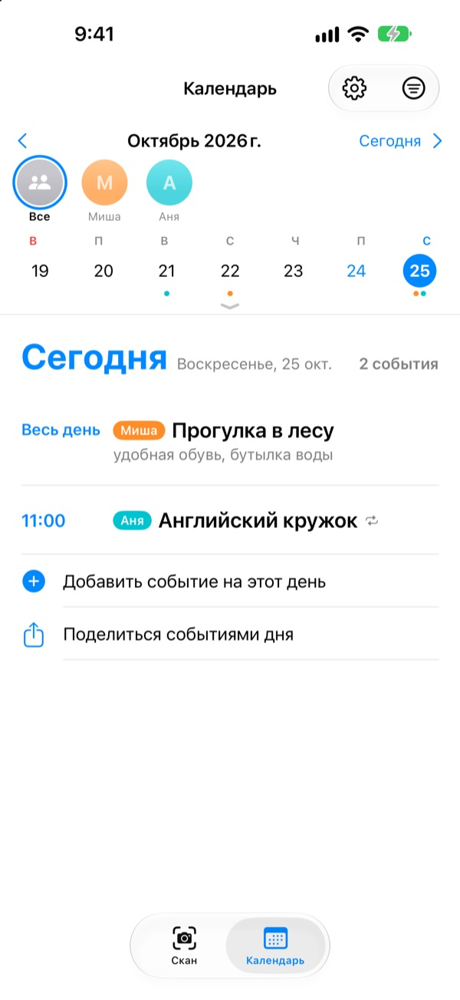

Просто сфотографируйте.
Накануне напомним.
Сфотографируйте план на месяц, который выдали в садике. Расписание малыша прочитает даты, время и названия событий и добавит всё разом. Вечером накануне экскурсии, в 20:00, придёт напоминание: не забудьте ланч-бокс.
Все функции бесплатны. Фотографии не покидают ваш iPhone.

Сфотографируйте объявление
Вот пример объявления о событиях следующего месяца. Сфотографируйте его, и, как в приложении, из него будут извлечены события и список вещей, а напоминания запланируются на выбранное время.
До сих пор переписываете объявления из садика в календарь?
Пять-шесть событий в месяц, и к каждому нужно что-то своё: ланч-бокс, спортивная форма, фартук. План на холодильнике по дороге на работу не видно, а вспоминаешь всегда в то же утро. Расписание малыша превращает этот листок в события календаря и напоминания.
Одно фото — весь месяц
Календарь-сетка, объявление для родителей или отдельная листовка: сфотографируйте или выберите снимок из медиатеки, и даты, время и названия событий будут прочитаны за вас. Можно вставить и сообщение от воспитателя: «завтра» или «в эту пятницу» превратятся в настоящие даты.
Перед сохранением поправьте название, дату или список вещей, а лишнее смахните. Укажите группу ребёнка, и события только для других групп отсеются сами.

Накануне вечером — напоминание
Выберите 20:00 накануне, 7:30 утром в тот же день, за 1 час или точно ко времени. Список вещей показывается прямо в напоминании, так что рюкзак будет собран.
С календарём Apple события попадают в отдельный календарь с именем ребёнка и никогда не добавляются дважды.

Несколько детей и вся семья
У каждого ребёнка свой цвет. Смотрите всех вместе или по одному; по прошлым событиям приложение угадает, чьё это новое объявление.
Отправьте ссылку-приглашение, и партнёр, бабушки с дедушками или няня смогут видеть и править те же события. Виджет на экране «Домой» покажет, что впереди.

Начать — три шага
- 1
Добавьте ребёнка
Имя и группа. Фото профиля — когда захотите.
- 2
Сфотографируйте объявление
Ровно и чётко — так текст распознаётся лучше всего.
- 3
Проверьте и сохраните
Разрешите уведомления, и напоминания придут в выбранное время.
Когда приходят напоминания
- 20:00 накануне
- Собрать вещи. Включено по умолчанию
- 7:30 в тот же день
- Что сегодня. Включено по умолчанию
- За 1 час
- Только для событий со временем
- В момент начала
- Только для событий со временем
Для событий на весь день, например экскурсии, приходят только напоминания накануне вечером и утром. Любое можно включить или выключить в настройках.
Все функции бесплатны
Бесплатно
- Распознавание событий с фото и из сообщений
- Правка перед сохранением, фильтр чужих групп
- Напоминания накануне, утром, за час и вовремя
- Свой цвет для каждого ребёнка и общий календарь
- Синхронизация с календарём Apple
- Общий доступ для семьи по ссылке
- Виджет на экране «Домой»
Поддержать разработчика
- В настройках можно оставить небольшие чаевые — сколько захотите
- Чаевые ничего не открывают. Приложение работает так же и без них
Без рекламы и подписок.
Частые вопросы
Какие фото подходят?
Календари на месяц в виде сетки, объявления, написанные текстом, и отдельные листовки. Снимок, сделанный прямо и с чётким текстом, распознаётся лучше. Можно выбрать сразу несколько фото и отсканировать их вместе.
Пропало несколько событий или в названии опечатка.
Рукописный или бледный текст распознаётся хуже. Поправьте название, дату или список вещей прямо в списке, а ненужное смахните. Пропущенное событие добавьте кнопкой «Добавить событие вручную» на вкладке «Скан» и сохраните ещё раз.
Не приходят напоминания.
Проверьте в «Настройки» > «Уведомления» > «Расписание малыша», что уведомления разрешены. В настройках приложения (⚙️) можно выбрать, какие напоминания получать.
Попадают события других групп.
Укажите в настройках название группы ребёнка, и события только для других групп будут отсеяны. Если в новом году группа сменится, достаточно поменять её там.
У меня несколько детей.
В настройках можно добавить сколько угодно детей, каждому — фото профиля. При сканировании выберите, чьи это события: в календаре у каждого ребёнка свой цвет, есть общий вид и фильтр по ребёнку.
Как поделиться расписанием с супругом?
В настройках, в разделе «Совместное расписание», нажмите «Пригласить» и отправьте ссылку сообщением. Приглашённый увидит и сможет править всех детей и события, а изменения с любой стороны сразу появятся у обоих. Это не связано с функцией «Семейный доступ» Apple.
Есть другие способы поделиться?
Кнопка «Поделиться» на вкладке «Календарь» отправит файл Расписания малыша, файл календаря (.ics) или текстовую сводку. Если включить «Добавлять и в календарь Apple», появится календарь с именем ребёнка; откройте к нему доступ через iCloud в приложении «Календарь», и семья тоже будет в курсе.
Мои фото или события куда-то отправляются?
Нет. Текст на фото распознаётся полностью на устройстве, и данные хранятся только там. События проходят через ваш iCloud, только если вы пригласили кого-то через «Совместное расписание», и только к приглашённым.
Что-то не работает или не хватает функции? Напишите на leeo@kakao.com. Обычно отвечаем за 2–3 дня. Укажите модель устройства и версию iOS — это поможет.